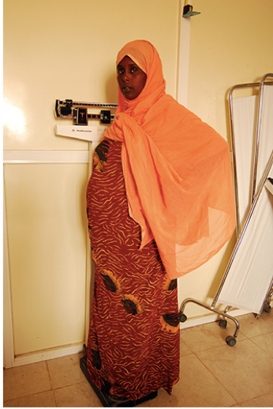
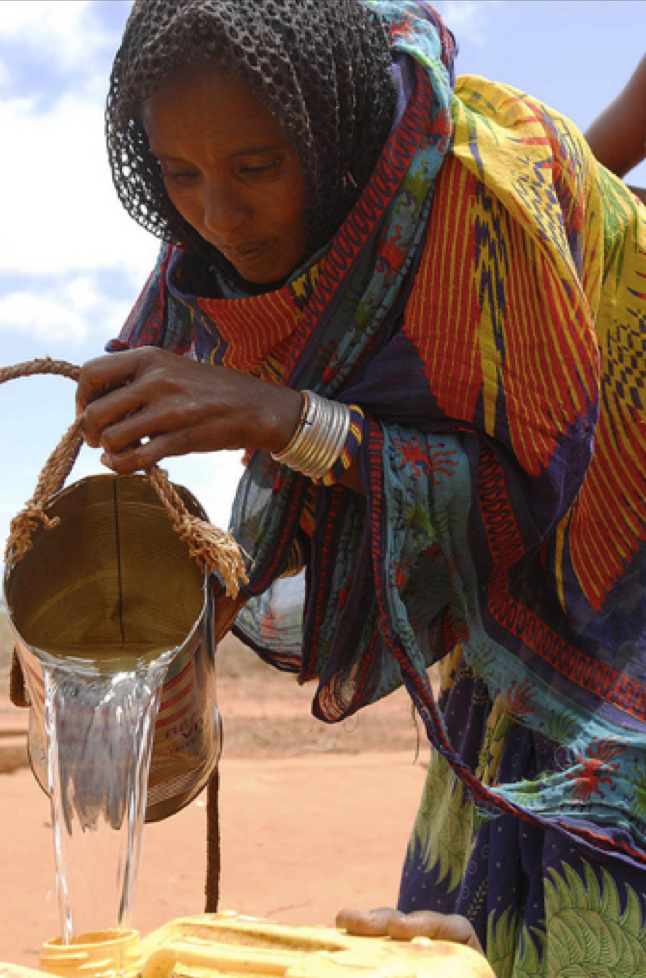

WorldBank Group
Stunting is a major public health problem in Djibouti. The current level of stunting in Djibouti is 30 percent, which exceeds the WHO severity thresholds of 20 percent. The main causes of stunting in Djibouti include low access to and utilization to of basic health services, high levels of food insecurity and poor environmental health (water, sanitation and hygiene).
All of the regions in Djibouti have critical levels of stunting (i.e. over 30 percent). The prevalence of stunting is higher among rural residents, compared to their urban counterparts (42.3% vs. 30.0%). Obock, Dikhil and Tadjourah regions have the highest stunting rates at 45.9%, 44.2% and 40.8%, respectively.
The current level of wasting in Djibouti is 17.8 percent, which exceeds the WHO severity thresholds of 5 percent. All regions in Djibouti have critical levels of wasting (i.e. over 10 percent). Obock, Djibouti City and Tadjourah regions have the highest wasting rates at 25.7%, 17.9% and 16.4%, respectively.
Only 23% of women receive four or more antenatal care visits, and just over half (54%) of women are receiving any form of postnatal care. Children fully immunized by their first birthday ranges from 70% to 80% in urban areas and from 40% to 50% in rural areas. 
Food insecurity is a persistent problem across Djibouti. With limited arable land, low rainfall and prolonged droughts, agriculture production and livelihoods are severely affected.
Agriculture is almost nonexistent, accounting only for about 3 percent of GDP and 2 percent of employment.
Food insecurity high across the country, 75% of the rural population food insecure and 20% in Djibouti City.
As a result, an alarmingly low percentage of children are consuming a minimum acceptable diet (i.e., at least four food groups and three meals per day) and getting the right nutrients to grow and thrive.
There are countrywide challenges in accessing improved water sources and sanitation.
Only 47% of the population has access to improved sanitation facilities (5% in rural areas); and only 65% of the rural population has access to improved water sources..
Access to improved sanitation facilities ranges from 60% in urban areas to just 5% in rural areas .
Recognizing the human and economic costs of childhood malnutrition, the World Bank has increased its investments globally to improve the nutrition and cognitive development of children in their early years. In Djibouti, levels of stunting and wasting remain at critical levels despite recent efforts to address both conditions. The new World Bank project “Towards Zero Stunting in Djibouti” is a $15 million IDA financed project, approved on July 9, 2018, that will increase support to end stunting and ensure that children are given the opportunity to survive and thrive. The project involves the implementation of an enhanced package of core nutrition interventions including: growth monitoring and promotion, micronutrient supplementation, nutrition and health interventions for women (antenatal care visits, iron/folic acid supplementation, etc.), and improved sanitation and hygiene practices, along with the use of new and innovative approaches to accelerate progress. The primary technological innovation in this project is the use of programmatic and geospatial mapping to improve outreach to vulnerable and otherwise hard-to-reach households; assist with the tracking of children and mothers affected and at-risk of stunting, and map current and available health services.